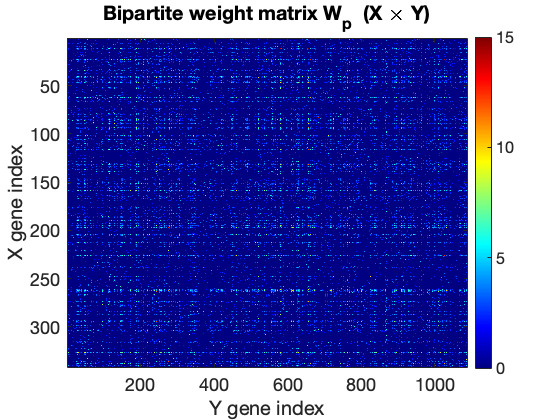
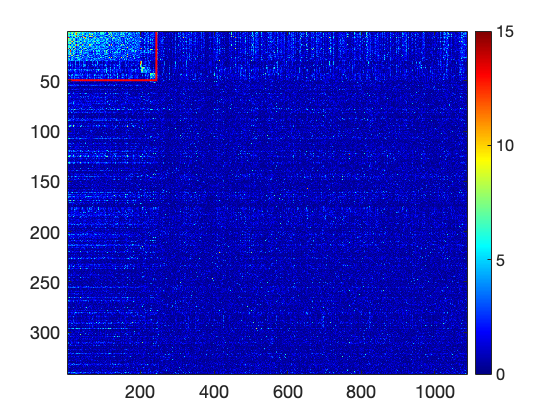
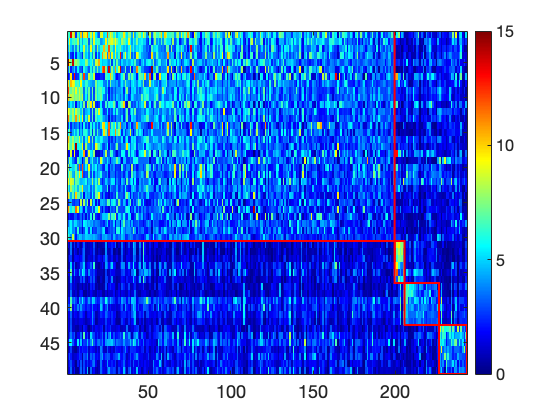
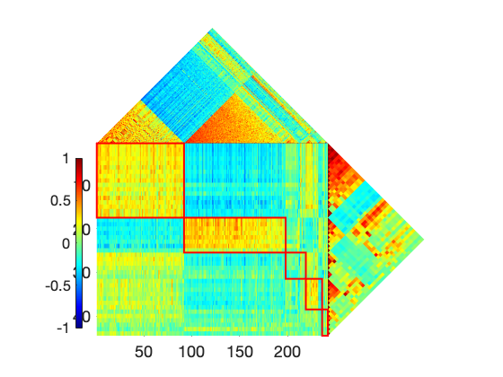
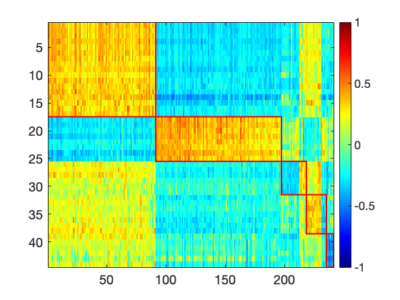
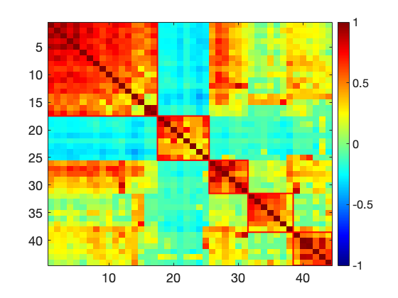
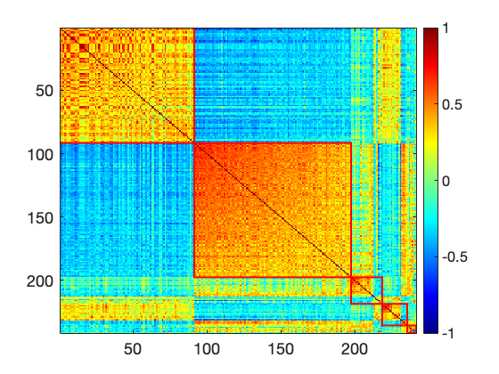
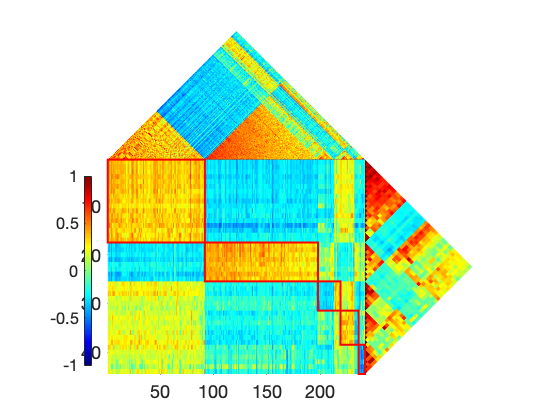
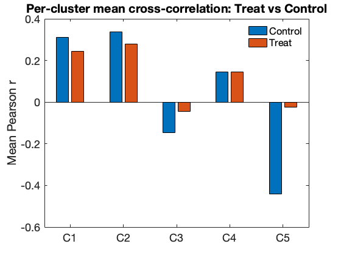
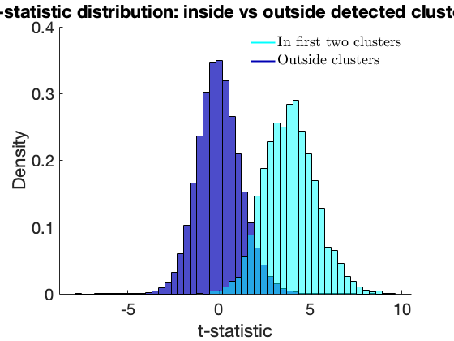

Dense Community Detection in Multi-omics Data (Dataset 2)
This script reproduces all figures and results for Dataset 2. Input: CRC_correlation_matrix.mat — pre-computed correlation matrices (Pearson r and -log10 p-value for Treatment and Control groups). No raw expression data is used.
Analysis pipeline:
- Load correlation matrices (R_Treat, R_Control, P_Treat, P_Control)
- Combine into a single R and P matrix (element-wise max by magnitude)
- Build bipartite weight matrix Wp = P(X-genes, Y-genes), threshold p < 0.01
- Run greedy peeling to detect dense bipartite communities (clusters)
- Refine Cluster 1 by re-running peeling on each side independently
- Split and reorder clusters, generate heatmaps and summary statistics
Contents
- Setup
- Load Correlation Matrices
- Build Combined Correlation and Significance Matrices
- Construct Bipartite Weight Matrix
- Initial Community Detection: Greedy Peeling
- Initial Result: Bipartite Weight Matrix Reordered by Clusters
- Refine Cluster 1: Sub-community Detection
- Split Cluster 1 into Two Sub-clusters
- Reorder Remaining Clusters
- 3-Panel Overview: Y-Y, X-X, and Y-X Correlation
- Per-modality Heatmaps Reordered by Clusters
- Full Matrix Comparison: Combined, Control, Treat
- Cluster Size and Treat vs Control Mean Correlation
- Treat vs Control Bar Chart
- t-statistic Distribution: Inside vs Outside Clusters
- Detected Gene Lists
Setup
addpath('../../CodeSummary/methods/') addpath('../../CodeSummary/visualization') set(0, 'DefaultAxesFontSize', 18); set(0, 'DefaultTextFontSize', 18); set(0, 'DefaultAxesColor', 'white'); set(0, 'DefaultFigureColor', 'white');
Load Correlation Matrices
CRC_correlation_matrix.mat contains four pre-computed matrices (single precision): R_Treat, R_Control — Pearson correlation coefficients P_Treat, P_Control — significance as -log10(p-value) name — cell array of gene/feature names (1 x 1428)
Dimensions: 341 X-features (rows 1:341) and 1087 Y-features (rows 342:1428).
load('CRC_correlation_matrix.mat'); m = 341; n = 1087; fprintf('Loaded CRC_correlation_matrix.mat\n'); fprintf(' X features : %d\n', m); fprintf(' Y features : %d\n', n); fprintf(' Matrix size: %d x %d\n', m+n, m+n);
Loaded CRC_correlation_matrix.mat X features : 341 Y features : 1087 Matrix size: 1428 x 1428
Build Combined Correlation and Significance Matrices
P = element-wise max of P_Treat and P_Control. Keeps the strongest significance signal from either condition.
R = element-wise max by absolute value between R_Treat and R_Control. Where Control has a larger absolute correlation, it replaces Treat. This ensures the combined R reflects the dominant correlation structure.
P = max(P_Treat, P_Control); R = R_Treat; mask = abs(R_Control) >= abs(R_Treat); R(mask) = R_Control(mask);
Construct Bipartite Weight Matrix
Wp = P(X-genes, Y-genes), entries below -log10(0.01) = 2 set to zero. This is the bipartite graph on which community detection runs.
Wp = P(1:m, (m+1):(m+n)); Wp(Wp < 2) = 0; figure; imagesc(Wp); colorbar; colormap(jet); caxis([0 15]); title('Bipartite weight matrix W_p (X \times Y)'); xlabel('Y gene index'); ylabel('X gene index');

Initial Community Detection: Greedy Peeling
greedy_peeling_XY_all finds dense bipartite subgraphs by iteratively peeling away low-weight nodes. Threshold 1.42 controls minimum density.
result is an Nx2 cell array: result{i,1} = X member indices for cluster i result{i,2} = Y member indices for cluster i (relative to 1, not m+1)
result = greedy_peeling_XY_all(Wp, 1.42); % Sort clusters by internal X and Y correlation structure. result = sort_result_XandY(R_Treat(1:m, 1:m), R_Treat((m+1):(m+n), (m+1):(m+n)), result); result([3 4], :) = result([4 3], :); result = sort_result(P(1:m, (m+1):(m+n)), result); n_clusters_init = sum(~cellfun(@isempty, result(:,1))); fprintf('Initial clusters detected: %d\n', n_clusters_init);
Round 1 ****************** Round 2 ****************** Round 3 ****************** Round 4 ****************** Round 5 ****************** Initial clusters detected: 4
Initial Result: Bipartite Weight Matrix Reordered by Clusters
plot_all_result(P(1:m, (m+1):(m+n)), result, true, true, [0 15]); plot_all_result(P(1:m, (m+1):(m+n)), result, false, true, [0 15]);


Refine Cluster 1: Sub-community Detection
Cluster 1 is the largest community. Re-running peeling on its X and Y sides separately reveals finer sub-structure within each modality.
idx_X = cat(1, result{1,1});
idx_Y = m + cat(2, result{1,2});
X = R(idx_X, idx_X);
Y = R(idx_Y, idx_Y);
% Re-peel X side of Cluster 1
test = greedy_peeling_X_all(X, 1.3);
test = sort_result(X, test);
result{1,1} = idx_X(cat(2, test{:,1}));
% Re-peel Y side of Cluster 1
test = greedy_peeling_X_all(Y, 1.3);
test = sort_result(Y, test);
result{1,2} = idx_Y(cat(2, test{:,1})) - m;
Round 1 ****************** Round 2 ****************** Round 3 ****************** Round 1 ****************** Round 2 ****************** Round 3 ******************
Split Cluster 1 into Two Sub-clusters
After refinement, Cluster 1 contains distinguishable sub-groups. Rows 18-25 of X (and rows 107-197 of Y) form a separate sub-cluster.
result = [result(1,:); cell(1,2); result(2:end,:)];
result{2,1} = result{1,1}(18:25);
result{1,1} = result{1,1}(1:17);
result{2,2} = result{1,2}(107:197);
result{1,2} = result{1,2}(1:106);
% Swap Y memberships between sub-clusters 1 and 2 for visual alignment
tmp = result{1,2};
result{1,2} = result{2,2};
result{2,2} = tmp;
Reorder Remaining Clusters
result([3 4 5], :) = result([4 5 3], :);
result = sort_result_XandY(R_Treat(1:m, 1:m), R_Treat((m+1):(m+n), (m+1):(m+n)), result);
n_clusters = sum(~cellfun(@isempty, result(:,1)));
fprintf('Final clusters after refinement: %d\n', n_clusters);
Final clusters after refinement: 5
3-Panel Overview: Y-Y, X-X, and Y-X Correlation
Shows all three correlation blocks reordered by the final cluster assignment. Left : Y intra-correlation Middle: X intra-correlation Right : Y-X cross-correlation
X_mat = R_Treat((m+1):(m+n), (m+1):(m+n)); Y_mat = R_Treat(1:m, 1:m); XY_mat = R_Treat((m+1):(m+n), 1:m); plot3in1_v1(X_mat, Y_mat, XY_mat, result, true, [50, 10], true);

Per-modality Heatmaps Reordered by Clusters
plot_all_result(R(1:m, (m+1):(m+n)), result, false, true, [-1, 1]); plot_all_result(R(1:m, 1:m), result(:,1), false, true, [-1, 1]); plot_all_result(R((m+1):(m+n), (m+1):(m+n)), result(:,2), false, true, [-1, 1]);



Full Matrix Comparison: Combined, Control, Treat
Visualise the same cluster reordering across three versions of R to compare how the structure looks in each condition.
for Rt = {R, R_Control, R_Treat} Rt = Rt{1}; X_mat = Rt((m+1):(m+n), (m+1):(m+n)); Y_mat = Rt(1:m, 1:m); XY_mat = Rt((m+1):(m+n), 1:m); plot3in1_v1(X_mat, Y_mat, XY_mat, result, true, [50, 10], true); end plot_all_result(R(1:m, (m+1):(m+n)), result, false, true, [-1, 1]);

Cluster Size and Treat vs Control Mean Correlation
L(i,1) = mean r across all X-Y gene pairs in cluster i, Control group L(i,2) = mean r across all X-Y gene pairs in cluster i, Treat group
XY_Treat = R_Treat(1:m, (m+1):(m+n)); XY_Control = R_Control(1:m, (m+1):(m+n)); L = []; i = 1; while ~isempty(result{i,1}) sub_C = XY_Control(result{i,1}, result{i,2}); sub_T = XY_Treat(result{i,1}, result{i,2}); L = [L; mean(sub_C(:)), mean(sub_T(:))]; i = i + 1; end fprintf('\n%-10s %-12s %-12s %-16s %-16s\n', ... 'Cluster', 'X members', 'Y members', 'Control mean r', 'Treat mean r'); fprintf('%s\n', repmat('-', 1, 70)); for i = 1:n_clusters fprintf('%-10d %-12d %-12d %-16.4f %-16.4f\n', ... i, numel(result{i,1}), numel(result{i,2}), L(i,1), L(i,2)); end
Cluster X members Y members Control mean r Treat mean r ---------------------------------------------------------------------- 1 17 91 0.3097 0.2454 2 8 106 0.3368 0.2779 3 6 21 -0.1453 -0.0452 4 7 17 0.1454 0.1454 5 6 6 -0.4418 -0.0252
Treat vs Control Bar Chart
figure; bar(L, 'grouped'); set(gca, 'XTickLabel', arrayfun(@(i) sprintf('C%d',i), 1:n_clusters, 'UniformOutput', false)); legend({'Control', 'Treat'}, 'Box', 'off', 'Location', 'NorthEast'); ylabel('Mean Pearson r'); title('Per-cluster mean cross-correlation: Treat vs Control'); grid off;

t-statistic Distribution: Inside vs Outside Clusters
Converts R_Control to a t-statistic and compares the distribution of values inside detected clusters vs the background (outside all clusters).
T = R_Control .* sqrt((127 - 2) ./ (1 - R.^2));
select_X = cat(2, result{1:n_clusters, 1});
select_Y = cat(2, result{1:n_clusters, 2});
omit_X = setdiff(1:m, select_X);
omit_Y = setdiff(1:n, select_Y);
data_out = T(omit_X, m + omit_Y);
data_out = data_out(:);
data_in = [];
for i = 1:2
in = T(result{i,1}, m + result{i,2});
data_in = [data_in; in(:)];
end
nbins = 50;
edges = linspace(min([data_out; data_in]), max([data_out; data_in]), nbins + 1);
figure; hold on;
histogram(data_out, edges, 'Normalization', 'pdf', ...
'FaceColor', [0 0 0.7], 'FaceAlpha', 0.7, 'EdgeColor', 'k', 'LineWidth', 0.3);
histogram(data_in, edges, 'Normalization', 'pdf', ...
'FaceColor', [0 1 1], 'FaceAlpha', 0.5, 'EdgeColor', 'k', 'LineWidth', 0.3);
l1 = plot(NaN, NaN, '-', 'Color', [0 1 1], 'LineWidth', 2);
l2 = plot(NaN, NaN, '-', 'Color', [0 0 0.7], 'LineWidth', 2);
legend([l1 l2], {'In first two clusters', 'Outside clusters'}, ...
'Interpreter', 'latex', 'Box', 'off', 'Location', 'NorthEast');
set(gca, 'FontSize', 20);
xlabel('t-statistic'); ylabel('Density');
title('t-statistic distribution: inside vs outside detected clusters');
grid off;

Detected Gene Lists
idx_X_all = cat(2, result{1:n_clusters, 1});
idx_Y_all = m + cat(2, result{1:n_clusters, 2});
name_X = name(idx_X_all);
name_Y = name(idx_Y_all);
for i = 1:n_clusters
ix = result{i,1};
iy = m + result{i,2};
fprintf('\n=== Cluster %d (%d X x %d Y genes) ===\n', ...
i, numel(ix), numel(iy));
fprintf('X genes: '); fprintf('%s ', name{ix}); fprintf('\n');
fprintf('Y genes: '); fprintf('%s ', name{iy}); fprintf('\n');
end
=== Cluster 1 (17 X x 91 Y genes) === X genes: C00407_Ile C00079_Phe C00123_Leu C00041_Ala C00183_Val C00037_Gly C00082_Tyr C00135_His C00300_Creatine C02356_2AB C05984_2_Hydroxybutyrate C00078_Trp C00114_Choline C00431_5_Aminovalerate C00134_Putrescine C01921_Glycocholate C05122_Taurocholate Y genes: d__Bacteria_p__Fusobacteriota_c__Fusobacteriia_o__Fusobacteri_3 d__Bacteria_p__Firmicutes_A_c__Clostridia_o__Lachnospirales_72 d__Bacteria_p__Proteobacteria_c__Gammaproteobacteria_o__Ente_19 d__Bacteria_p__Firmicutes_c__Bacilli_o__Lactobacillales_f__Ae_1 d__Bacteria_p__Actinobacteriota_c__Actinomycetia_o__Mycobact_1 d__Bacteria_p__Proteobacteria_c__Gammaproteobacteria_o__Ente_27 d__Bacteria_p__Firmicutes_c__Bacilli_o__Staphylococcales_f__Sta d__Bacteria_p__Actinobacteriota_c__Coriobacteriia_o__Corioba_23 d__Bacteria_p__Actinobacteriota_c__Actinomycetia_o__Actinomy_7 d__Bacteria_p__Actinobacteriota_c__Actinomycetia_o__Actinomy_8 d__Bacteria_p__Firmicutes_A_c__Clostridia_o__Lachnospirales_104 d__Bacteria_p__Firmicutes_A_c__Clostridia_o__Lachnospirales_105 d__Bacteria_p__Patescibacteria_c__Saccharimonadia_o__Saccharimo d__Bacteria_p__Proteobacteria_c__Gammaproteobacteria_o__Ente_2 d__Bacteria_p__Proteobacteria_c__Gammaproteobacteria_o__Ente_4 d__Bacteria_p__Proteobacteria_c__Gammaproteobacteria_o__Ente_25 d__Bacteria_p__Proteobacteria_c__Gammaproteobacteria_o__Ente_29 d__Bacteria_p__Firmicutes_c__Bacilli_o__Bacillales_f__Bacilla_1 d__Bacteria_p__Proteobacteria_c__Gammaproteobacteria_o__Ente_15 d__Bacteria_p__Proteobacteria_c__Gammaproteobacteria_o__Ente_22 d__Bacteria_p__Firmicutes_A_c__Clostridia_o__Peptostreptococ_8 d__Bacteria_p__Firmicutes_A_c__Clostridia_o__Lachnospirales_116 d__Bacteria_p__Firmicutes_c__Bacilli_o__Staphylococcales_f__Gem d__Bacteria_p__Deinococcota_c__Deinococci_o__Deinococcales_f__T d__Bacteria_p__Proteobacteria_c__Gammaproteobacteria_o__Ente_26 d__Bacteria_p__Firmicutes_C_c__Negativicutes_o__Veillonellale_4 d__Bacteria_p__Proteobacteria_c__Gammaproteobacteria_o__Ente_3 d__Bacteria_p__Proteobacteria_c__Gammaproteobacteria_o__Pseud_3 d__Bacteria_p__Firmicutes_c__Bacilli_o__Erysipelotrichales_f_1 d__Bacteria_p__Firmicutes_C_c__Negativicutes_o__Veillonellales_ d__Bacteria_p__Firmicutes_A_c__Clostridia_o__Tissierellales_f__ d__Bacteria_p__Firmicutes_c__Bacilli_o__Lactobacillales_f__Stre d__Bacteria_p__Firmicutes_A_c__Clostridia_o__Lachnospirales_121 d__Bacteria_p__Proteobacteria_c__Gammaproteobacteria_o__Ente_17 d__Bacteria_p__Firmicutes_c__Bacilli_o__Erysipelotrichales_f_27 d__Bacteria_p__Firmicutes_A_c__Clostridia_o__Peptostreptococ_16 d__Bacteria_p__Proteobacteria_c__Gammaproteobacteria_o__Ente_28 d__Bacteria_p__Proteobacteria_c__Gammaproteobacteria_o__Ente_12 d__Bacteria_p__Proteobacteria_c__Gammaproteobacteria_o__Ente_6 d__Bacteria_p__Firmicutes_A_c__Clostridia_o__Lachnospirales_102 d__Bacteria_p__Proteobacteria_c__Gammaproteobacteria_o__Ente_14 d__Bacteria_p__Patescibacteria_c__Saccharimonadia_o__Sacchari_2 d__Bacteria_p__Proteobacteria_c__Gammaproteobacteria_o__Ente_23 d__Bacteria_p__Bacteroidota_c__Bacteroidia_o__Chitinophagale_7 d__Bacteria_p__Firmicutes_C_c__Negativicutes_o__Veillonellale_5 d__Bacteria_p__Firmicutes_A_c__Clostridia_o__Clostridiales_f__2 d__Bacteria_p__Myxococcota_c__Myxococcia_o__Myxococcales_f__Myx d__Bacteria_p__Firmicutes_A_c__Clostridia_o__Peptostreptococ_9 d__Bacteria_p__Firmicutes_A_c__Clostridia_o__Lachnospirales_124 d__Bacteria_p__Proteobacteria_c__Gammaproteobacteria_o__Ente_1 d__Bacteria_p__Firmicutes_c__Bacilli_o__Bacillales_B_f__DSM_182 d__Bacteria_p__Actinobacteriota_c__Coriobacteriia_o__Corioba_7 d__Bacteria_p__Fusobacteriota_c__Fusobacteriia_o__Fusobacteri_4 d__Bacteria_p__Proteobacteria_c__Gammaproteobacteria_o__Enterob d__Bacteria_p__Proteobacteria_c__Alphaproteobacteria_o__Rhiz_9 d__Bacteria_p__Firmicutes_c__Bacilli_o__Erysipelotrichales_f_10 d__Bacteria_p__Actinobacteriota_c__Actinomycetia_o__Actinomy_3 d__Bacteria_p__Firmicutes_A_c__Clostridia_o__Lachnospirales_64 d__Bacteria_p__Firmicutes_c__Bacilli_o__Bacillales_f__Bacillace d__Bacteria_p__Firmicutes_A_c__Clostridia_o__Clostridiales_f__7 d__Bacteria_p__Proteobacteria_c__Gammaproteobacteria_o__Burk_2 d__Bacteria_p__Firmicutes_A_c__Clostridia_o__Lachnospirales_177 d__Bacteria_p__Myxococcota_c__Myxococcia_o__Myxococcales_f__M_1 d__Bacteria_p__Actinobacteriota_c__Actinomycetia_o__Actinomy_4 d__Bacteria_p__Proteobacteria_c__Alphaproteobacteria_o__Pelag_1 d__Bacteria_p__Firmicutes_c__Bacilli_o__Lactobacillales_f__Aero d__Bacteria_p__Firmicutes_A_c__Clostridia_o__Lachnospirales_184 d__Bacteria_p__Firmicutes_A_c__Clostridia_o__Lachnospirales_1 d__Bacteria_p__Firmicutes_A_c__Clostridia_o__Lachnospirales_142 d__Bacteria_p__Bacteroidota_c__Bacteroidia_o__Flavobacterial_9 d__Bacteria_p__Firmicutes_A_c__Clostridia_o__Lachnospirales_164 d__Bacteria_p__Proteobacteria_c__Gammaproteobacteria_o__Burk_22 d__Bacteria_p__Firmicutes_c__Bacilli_o__Bacillales_f__Bacilla_2 d__Bacteria_p__Firmicutes_A_c__Clostridia_o__Lachnospirales_150 d__Bacteria_p__Fusobacteriota_c__Fusobacteriia_o__Fusobacterial d__Bacteria_p__Fusobacteriota_c__Fusobacteriia_o__Fusobacteri_5 d__Bacteria_p__Actinobacteriota_c__Actinomycetia_o__Propionibac d__Bacteria_p__Firmicutes_A_c__Clostridia_o__Peptostreptococ_14 d__Bacteria_p__Firmicutes_c__Bacilli_o__Lactobacillales_f__En_4 d__Bacteria_p__Firmicutes_A_c__Clostridia_o__Lachnospirales_186 d__Bacteria_p__Firmicutes_A_c__Clostridia_o__Tissierellales_f_5 d__Bacteria_p__Firmicutes_c__Bacilli_o__Bacillales_B_f__DSM_1_3 d__Bacteria_p__Firmicutes_A_c__Clostridia_o__Clostridiales_f__8 d__Bacteria_p__Fusobacteriota_c__Fusobacteriia_o__Fusobacteri_1 d__Bacteria_p__Firmicutes_A_c__Clostridia_o__Peptostreptococ_11 d__Bacteria_p__Firmicutes_A_c__Clostridia_o__Tissierellales_f_3 d__Bacteria_p__Firmicutes_A_c__Clostridia_o__Clostridiales_f__5 d__Bacteria_p__Firmicutes_A_c__Clostridia_o__Lachnospirales_149 d__Bacteria_p__Proteobacteria_c__Gammaproteobacteria_o__Burk_13 d__Bacteria_p__Firmicutes_A_c__Clostridia_o__Lachnospirales_172 d__Bacteria_p__Firmicutes_A_c__Clostridia_o__Lachnospirales_70 === Cluster 2 (8 X x 106 Y genes) === X genes: C08261_Azelate C08277_Sebacate C06103_6_Hydroxyhexanoate C02678_Dodecanedioate C17714_Heptanoate C00568_p_Aminobenzoate C00624_N_Acetylglutamate C02656_Pimelate Y genes: d__Bacteria_p__Firmicutes_A_c__Clostridia_o__Oscillospirale_7 d__Bacteria_p__Firmicutes_A_c__Clostridia_o__Oscillospirale_53 d__Bacteria_p__Firmicutes_A_c__Clostridia_o__Oscillospirale_71 d__Bacteria_p__Firmicutes_A_c__Clostridia_o__Oscillospirale_40 d__Bacteria_p__Firmicutes_A_c__Clostridia_o__Christensenella_6 d__Bacteria_p__Firmicutes_A_c__Clostridia_o__Oscillospirale_3 d__Bacteria_p__Firmicutes_A_c__Clostridia_o__Oscillospirale_92 d__Bacteria_p__Firmicutes_A_c__Clostridia_o__Christensenella_38 d__Bacteria_p__Firmicutes_A_c__Clostridia_o__Oscillospirale_25 d__Bacteria_p__Firmicutes_A_c__Clostridia_o__Oscillospirale_103 d__Bacteria_p__Firmicutes_A_c__Clostridia_o__Oscillospirale_13 d__Bacteria_p__Firmicutes_A_c__Clostridia_o__Christensenella_24 d__Bacteria_p__Firmicutes_A_c__Clostridia_o__Christensenella_29 d__Bacteria_p__Firmicutes_A_c__Clostridia_o__Oscillospirale_56 d__Bacteria_p__Firmicutes_A_c__Clostridia_o__Oscillospirale_95 d__Bacteria_p__Firmicutes_A_c__Clostridia_o__Oscillospirale_32 d__Bacteria_p__Firmicutes_A_c__Clostridia_o__Christensenella_14 d__Bacteria_p__Firmicutes_A_c__Clostridia_o__Christensenella_34 d__Bacteria_p__Firmicutes_A_c__Clostridia_o__Christensenella_26 d__Bacteria_p__Firmicutes_A_c__Clostridia_o__Oscillospirale_164 d__Bacteria_p__Firmicutes_A_c__Clostridia_o__Christensenella_16 d__Bacteria_p__Firmicutes_A_c__Clostridia_o__Christensenella_30 d__Bacteria_p__Firmicutes_A_c__Clostridia_o__Oscillospirale_153 d__Bacteria_p__Firmicutes_A_c__Clostridia_o__Oscillospirale_52 d__Bacteria_p__Firmicutes_A_c__Clostridia_o__Oscillospirale_79 d__Bacteria_p__Firmicutes_A_c__Clostridia_o__Christensenellales d__Bacteria_p__Firmicutes_A_c__Clostridia_o__Oscillospirale_8 d__Bacteria_p__Firmicutes_A_c__Clostridia_o__Oscillospirale_75 d__Bacteria_p__Firmicutes_A_c__Clostridia_o__Oscillospirale_139 d__Bacteria_p__Firmicutes_A_c__Clostridia_o__Oscillospirale_38 d__Bacteria_p__Firmicutes_A_c__Clostridia_o__Christensenella_40 d__Bacteria_p__Firmicutes_A_c__Clostridia_o__Oscillospirale_97 d__Bacteria_p__Firmicutes_A_c__Clostridia_o__Christensenella_37 d__Bacteria_p__Firmicutes_A_c__Clostridia_o__Christensenella_15 d__Bacteria_p__Firmicutes_A_c__Clostridia_o__Oscillospirale_49 d__Bacteria_p__Firmicutes_A_c__Clostridia_o__Oscillospirale_147 d__Bacteria_p__Firmicutes_A_c__Clostridia_o__Oscillospirale_109 d__Bacteria_p__Firmicutes_A_c__Clostridia_o__Oscillospirale_131 d__Bacteria_p__Firmicutes_A_c__Clostridia_o__Oscillospirale_24 d__Bacteria_p__Firmicutes_A_c__Clostridia_o__Oscillospirale_50 d__Bacteria_p__Firmicutes_A_c__Clostridia_o__Oscillospirale_31 d__Bacteria_p__Firmicutes_A_c__Clostridia_o__Oscillospirale_135 d__Bacteria_p__Firmicutes_A_c__Clostridia_o__Oscillospirale_174 d__Bacteria_p__Firmicutes_A_c__Clostridia_o__Oscillospirale_47 d__Bacteria_p__Firmicutes_A_c__Clostridia_o__Christensenella_5 d__Bacteria_p__Firmicutes_A_c__Clostridia_o__Lachnospirales_99 d__Bacteria_p__Firmicutes_A_c__Clostridia_o__Oscillospirale_89 d__Bacteria_p__Firmicutes_A_c__Clostridia_o__Oscillospirale_26 d__Bacteria_p__Firmicutes_A_c__Clostridia_o__Oscillospirale_11 d__Bacteria_p__Firmicutes_A_c__Clostridia_o__Oscillospirale_115 d__Bacteria_p__Firmicutes_A_c__Clostridia_o__Oscillospirale_110 d__Bacteria_p__Firmicutes_A_c__Clostridia_o__Oscillospirale_18 d__Bacteria_p__Firmicutes_A_c__Clostridia_o__Oscillospirale_2 d__Bacteria_p__Firmicutes_A_c__Clostridia_o__Oscillospirale_101 d__Bacteria_p__Firmicutes_A_c__Clostridia_o__Christensenella_7 d__Bacteria_p__Firmicutes_A_c__Clostridia_o__Oscillospirale_73 d__Bacteria_p__Firmicutes_A_c__Clostridia_o__Oscillospirale_143 d__Bacteria_p__Firmicutes_A_c__Clostridia_o__Oscillospirale_138 d__Bacteria_p__Firmicutes_A_c__Clostridia_o__Oscillospirale_141 d__Bacteria_p__Firmicutes_A_c__Clostridia_o__Oscillospirale_145 d__Bacteria_p__Firmicutes_A_c__Clostridia_o__Oscillospirale_62 d__Bacteria_p__Firmicutes_A_c__Clostridia_o__Oscillospirale_60 d__Bacteria_p__Firmicutes_A_c__Clostridia_o__Oscillospirale_37 d__Bacteria_p__Firmicutes_A_c__Clostridia_o__Oscillospirale_55 d__Bacteria_p__Firmicutes_A_c__Clostridia_o__UBA1212_f__UBA12_1 d__Bacteria_p__Firmicutes_A_c__Clostridia_o__Oscillospirale_22 d__Bacteria_p__Firmicutes_A_c__Clostridia_o__Oscillospirale_74 d__Bacteria_p__Firmicutes_A_c__Clostridia_o__Oscillospirale_94 d__Bacteria_p__Firmicutes_A_c__Clostridia_o__Oscillospirale_88 d__Bacteria_p__Firmicutes_A_c__Clostridia_o__Oscillospirale_46 d__Bacteria_p__Firmicutes_A_c__Clostridia_o__Oscillospirale_176 d__Bacteria_p__Firmicutes_A_c__Clostridia_o__Christensenella_8 d__Bacteria_p__Firmicutes_A_c__Clostridia_o__Oscillospirale_146 d__Bacteria_p__Firmicutes_A_c__Clostridia_o__Christensenella_12 d__Bacteria_p__Firmicutes_A_c__Clostridia_o__Christensenella_3 d__Bacteria_p__Firmicutes_A_c__Clostridia_o__Oscillospirale_66 d__Bacteria_p__Firmicutes_A_c__Clostridia_o__Lachnospirales_224 d__Bacteria_p__Firmicutes_A_c__Clostridia_o__Oscillospirale_114 d__Bacteria_p__Firmicutes_A_c__Clostridia_o__Oscillospirale_133 d__Bacteria_p__Firmicutes_A_c__Clostridia_o__Oscillospirale_120 d__Bacteria_p__Firmicutes_A_c__Clostridia_o__Oscillospirale_162 d__Bacteria_p__Firmicutes_A_c__Clostridia_o__Oscillospirale_12 d__Bacteria_p__Firmicutes_A_c__Clostridia_o__Christensenella_4 d__Bacteria_p__Firmicutes_A_c__Clostridia_o__Oscillospirale_30 d__Bacteria_p__Bacteroidota_c__Bacteroidia_o__Bacteroidales_33 d__Bacteria_p__Firmicutes_A_c__Clostridia_o__Oscillospirale_90 d__Bacteria_p__Firmicutes_A_c__Clostridia_o__Oscillospirale_161 d__Bacteria_p__Firmicutes_A_c__Clostridia_o__Oscillospirale_48 d__Bacteria_p__Firmicutes_A_c__Clostridia_o__Oscillospirale_130 d__Bacteria_p__Firmicutes_A_c__Clostridia_o__Oscillospirale_124 d__Bacteria_p__Firmicutes_A_c__Clostridia_o__Christensenella_18 d__Bacteria_p__Firmicutes_A_c__Clostridia_o__Oscillospirale_106 d__Bacteria_p__Firmicutes_A_c__Clostridia_o__Oscillospirale_72 d__Bacteria_p__Firmicutes_A_c__Clostridia_o__Oscillospirale_69 d__Bacteria_p__Firmicutes_A_c__Clostridia_o__Oscillospirale_149 d__Bacteria_p__Firmicutes_A_c__Clostridia_o__Oscillospirale_177 d__Bacteria_p__Firmicutes_A_c__Clostridia_o__Lachnospirales_162 d__Bacteria_p__Firmicutes_A_c__Clostridia_o__Peptostreptococ_15 d__Bacteria_p__Firmicutes_A_c__Clostridia_o__Oscillospirale_163 d__Bacteria_p__Firmicutes_A_c__Clostridia_o__Oscillospirale_127 d__Bacteria_p__Firmicutes_A_c__Clostridia_o__Oscillospirale_140 d__Bacteria_p__Firmicutes_A_c__Clostridia_o__Peptostreptococcal d__Bacteria_p__Firmicutes_A_c__Clostridia_o__Lachnospirales_187 d__Bacteria_p__Firmicutes_A_c__Clostridia_o__Christensenella_13 d__Bacteria_p__Firmicutes_A_c__Clostridia_o__Lachnospirales_170 d__Bacteria_p__Firmicutes_A_c__Clostridia_o__Oscillospirale_126 === Cluster 3 (6 X x 21 Y genes) === X genes: C05607_3_Phenyllactate C03264_2_Hydroxy_4_methylpentanoate x2_Hydroxypentanoate C01198_3__2_Hydroxyphenyl_propionate C00148_Pro C01015_Hydroxyproline Y genes: d__Bacteria_p__Firmicutes_A_c__Clostridia_o__Lachnospirales_31 d__Bacteria_p__Firmicutes_A_c__Clostridia_o__Lachnospirales_122 d__Bacteria_p__Firmicutes_A_c__Clostridia_o__Lachnospirales_185 d__Bacteria_p__Firmicutes_A_c__Clostridia_o__Lachnospirales_69 d__Bacteria_p__Firmicutes_A_c__Clostridia_o__Lachnospirales_139 d__Bacteria_p__Firmicutes_A_c__Clostridia_o__Lachnospirales_212 d__Bacteria_p__Firmicutes_A_c__Clostridia_o__Lachnospirales_79 d__Bacteria_p__Firmicutes_A_c__Clostridia_o__Lachnospirales_82 d__Bacteria_p__Firmicutes_A_c__Clostridia_o__Lachnospirales_195 d__Bacteria_p__Firmicutes_A_c__Clostridia_o__Lachnospirales_10 d__Bacteria_p__Firmicutes_A_c__Clostridia_o__Lachnospirales_196 d__Bacteria_p__Firmicutes_A_c__Clostridia_o__Lachnospirales_135 d__Bacteria_p__Firmicutes_A_c__Clostridia_o__Lachnospirales_63 d__Bacteria_p__Firmicutes_A_c__Clostridia_o__Oscillospirale_155 d__Bacteria_p__Firmicutes_A_c__Clostridia_o__Lachnospirales_202 d__Bacteria_p__Firmicutes_c__Bacilli_o__Lactobacillales_f__Vago d__Bacteria_p__Firmicutes_C_c__Negativicutes_o__Veillonellale_1 d__Bacteria_p__Actinobacteriota_c__Actinomycetia_o__Mycobact_6 d__Bacteria_p__Firmicutes_A_c__Clostridia_o__Lachnospirales_146 d__Bacteria_p__Firmicutes_A_c__Clostridia_o__Lachnospirales_152 d__Bacteria_p__Bacteroidota_c__Bacteroidia_o__Sphingobacteria_3 === Cluster 4 (7 X x 17 Y genes) === X genes: C00099_beta_Ala C00334_GABA C02376_5_Methylcytosine C11118_1_Methyl_2_pyrrolidinone C06057_3_Aminopropane_1_2_diol C02714_N_Acetylputrescine C03793_N6_N6_N6_Trimethyllysine Y genes: d__Bacteria_p__Firmicutes_c__Bacilli_o__Lactobacillales_f__La_7 d__Bacteria_p__Firmicutes_c__Bacilli_o__Lactobacillales_f__La_6 d__Bacteria_p__Firmicutes_c__Bacilli_o__Lactobacillales_f__La_1 d__Bacteria_p__Firmicutes_c__Bacilli_o__Lactobacillales_f__La_4 d__Bacteria_p__Firmicutes_c__Bacilli_o__Lactobacillales_f__La_8 d__Bacteria_p__Firmicutes_c__Bacilli_o__Lactobacillales_f__La_2 d__Bacteria_p__Firmicutes_c__Bacilli_o__Lactobacillales_f__La_3 d__Bacteria_p__Actinobacteriota_c__Actinomycetia_o__Actinomy_5 d__Bacteria_p__Actinobacteriota_c__Actinomycetia_o__Actinomy_6 d__Bacteria_p__Bacteroidota_c__Bacteroidia_o__Flavobacterial_5 d__Bacteria_p__Firmicutes_c__Bacilli_o__Lactobacillales_f__Ente d__Bacteria_p__Proteobacteria_c__Alphaproteobacteria_o__Caulo_2 d__Bacteria_p__Bacteroidota_c__Bacteroidia_o__Sphingobacteriale d__Bacteria_p__Firmicutes_A_c__Clostridia_o__Peptostreptococ_4 d__Bacteria_p__Firmicutes_A_c__Clostridia_o__Oscillospirale_34 d__Bacteria_p__Firmicutes_A_c__Clostridia_o__Oscillospirale_98 d__Bacteria_p__Firmicutes_c__Bacilli_o__Erysipelotrichales_f_21 === Cluster 5 (6 X x 6 Y genes) === X genes: C01879_5_Oxoproline C00233_4_Methyl_2_oxopentanoate C00490_Itaconate C00179_Agmatine C00449_Saccharopine C03570_Mannosamine Y genes: d__Bacteria_p__Firmicutes_A_c__Clostridia_o__Lachnospirales_129 d__Bacteria_p__Firmicutes_A_c__Clostridia_o__Oscillospirale_119 d__Bacteria_p__Firmicutes_A_c__Clostridia_o__Oscillospirale_105 d__Bacteria_p__Firmicutes_A_c__Clostridia_o__Oscillospirale_16 d__Bacteria_p__Firmicutes_A_c__Clostridia_o__Oscillospirale_51 d__Bacteria_p__Firmicutes_A_c__Clostridia_o__Oscillospirale_134